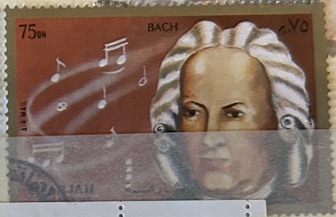
| SOURCE | TITLE| IMAGE MATCH | click to source page |
| www.ebay.com | Sharjah Music Famous Baroque Composer Bach stamp 1969 | eBay | 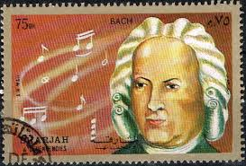 |
| stock.adobe.com | Johann Sebastian Bach Music Images – Browse 465 Stock Photos ... | 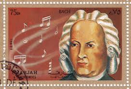 |
| www.pinterest.com | Sharjah 1972 Scientists and Artists Postage Stamp Set // | Etsy | 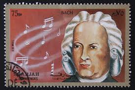 |
| www.ebay.com | 1985 India Sc# 1110 - 5oo, Celebrating Musicians Bach ... | 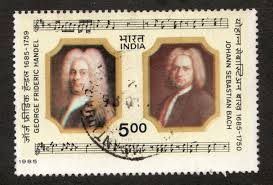 |
| www.ebay.com | POLYMER SET El Club De La Moneda 10;20;30 Reales 2021 Great ... | 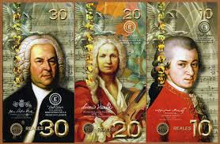 |
| www.amazon.com | Bach, Johann Sebastian, Klemens Schnorr - Meet the Classics ... | 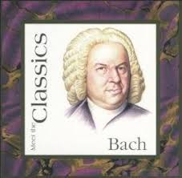 |
| www.bachonbach.com | Bach on Bach: All 150 Johann Sebastian Bach Stamps on Earth | 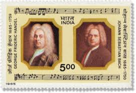 |
| www.bach-cantatas.com | Bach Stamp - Nevis (2000) | 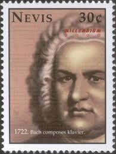 |
| www.eetimes.com | EE Times Weekend | 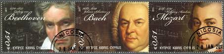 |
| www.alamy.com | IRELAND - CIRCA 1985: a stamp printed in the Ireland shows ... | 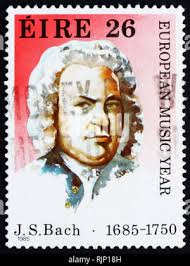 |
| www.shutterstock.com | Sharjah 1972 1 Riyal Multicolored Postage Stock Photo ... | 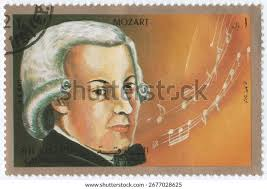 |
| www.bachonbach.com | All 170 Johann Sebastian Bach Stamps in the World | 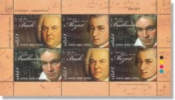 |
| www.hudbajerecandelu.websnadno.cz | Hudba je řeč andělů | Music stamps | 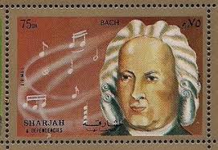 |
| www.ebay.com | Ukraine 2017, Music, Great Composer J.S. Bach, sheet 9v | eBay | 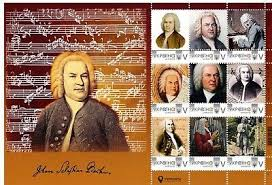 |
| www.mobclassic.com | Insert title here | 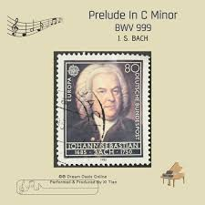 |
| www.istockphoto.com | Postage Stamp Shiarjah Dependencies 1972 Shows Wolfgang ... | 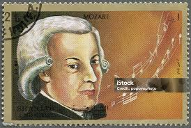 |
| www.gettyimages.com | Johann Sebastian Bach Stamp High-Res Stock Photo - Getty Images | 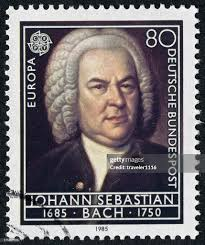 |
| www.youtube.com | Great Composers | EP#3 Johann Sebastian Bach I GuitarCoop ... | 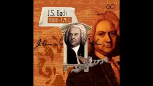 |
| www.dreamstime.com | Postage Stamp Mexico, 1985. Johann Sebastian Bach Portrait ... | 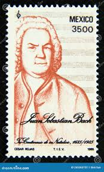 |
| pixers.us | Sticker Immanuel Kant - PIXERS.US | 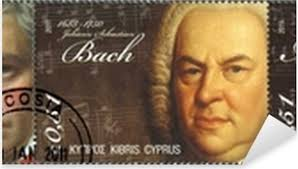 |
| x.com | Lot of three 1911 Presser's Composers -- Beethoven, Bach ... | 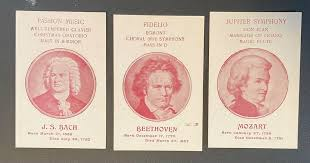 |
| www.cyprusstamps.com | Cyprus stamps - Famous Composers of 18th Century. Bach ... | 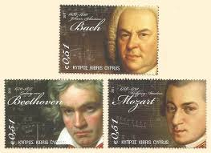 |
| www.alamy.com | Portrait of Johann Sebastian Bach on postage stamp Stock ... | 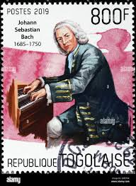 |
| sklep.foteks.pl | Naklejka Johann Sebastian Bach - sztuka, kultura, bach ... | 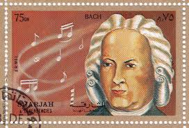 |
| www.youtube.com | Bach vs. Handel - YouTube | 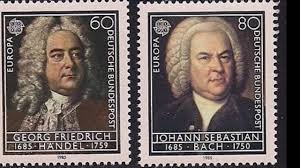 |
| www.cypruspost.post | 18th Century Famous Composers | 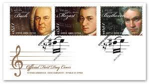 |
| www.capesymphony.org | Fun Facts: Johann Sebastian Bach | 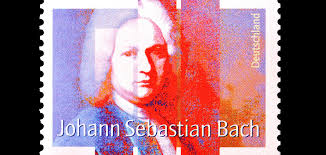 |
| www.dreamstime.com | Portrait of Johann Sebastian Bach, European Year of Music ... | 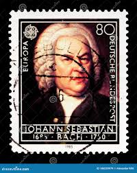 |
| www.bachonbach.com | Bach On Bach: All 170 Johann Sebastian Bach stamps in the World | 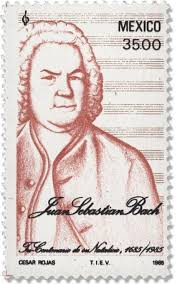 |
| www.amazon.com | Orchestral Transcriptions (J.S. Bach) - Amazon.com Music | 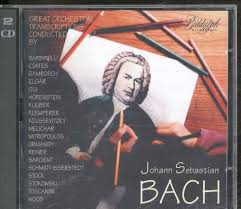 |
| interlude.hk | Classical Composers on STAMPS | 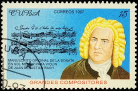 |
| www.mfwbooks.com | Intro to Vivaldi, Bach, and Handel (ONLINE) - 12610 | 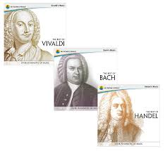 |
| www.odysseytraveller.com | Bach Small Group Tour | Bach Music Festival | Odyssey Traveller | 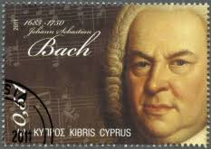 |
| tshawdesigns.com | Bach" | Silkscreen – T. Shaw | 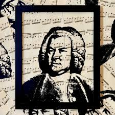 |
| themusicalheritagesociety.com | The Essential Bach – The Musical Heritage Society | 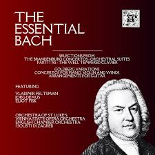 |
| www.pinterest.com | Stamps of J. S. Bach | 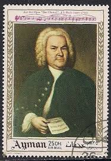 |
| www.shutterstock.com | 10+ Thousand Ins Bach Royalty-Free Images, Stock Photos ... | 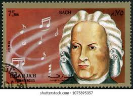 |
| www.shazam.com | Brandenburg Concerto No. 1 in F Major BWV 1046: III. Allegro ... | 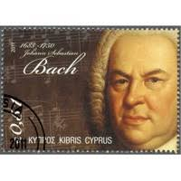 |
| www.facebook.com | Mozart's birthday and musical legacy | 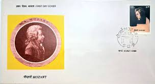 |
| he.kendallhunt.com | The Baroque Era | 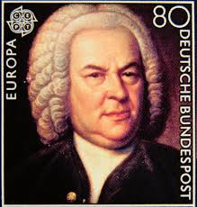 |
| panamacitysymphony.org | THE BEST OF BACH, BEETHOVEN, & MOZART - Panama City Symphony | 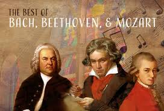 |
| www.bach-cantatas.com | Bach Stamp - Gambia (2000) | 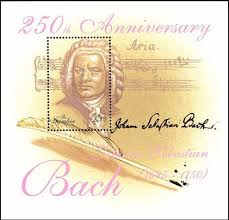 |
| www.hoffmanacademy.com | Johann Sebastian Bach: Biography & Most Famous Pieces | 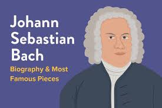 |
| www.ebay.com | Specimen, Belgium Sc1817 Music, Musical Instrument Museum ... | 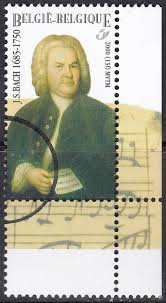 |
| en.wikipedia.org | Johann Sebastian Bach - Wikipedia | 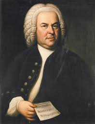 |
| www.rivieratravel.com | A Musical Tour of the Danube – Riviera Travel | 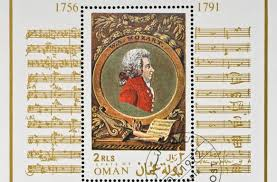 |
| www.motivgruppe-musik.com | Websites with Philatelic Music – Composers – Motivgruppe Musik | 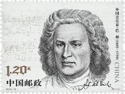 |
| open.spotify.com | "Bach & Mozart" - Pieces for Piano - Compilation by Wolfgang ... | 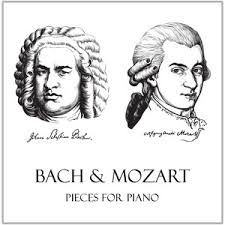 |
| www.abebooks.com | Bach: His Greatest Piano Solos - Alexander Shealy ... | 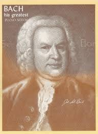 |
| www.discogs.com | Bach – Best Bach 100 – 6 x CD (Compilation, Stereo), 2006 ... | |
| www.harp.com | Andante Cantabile from Violin Sonata no.2, BWV 1003 (Hp/Or ... | |
| info.mysticstamp.com | Death of Beethoven | Mystic Stamp Discovery Center | |
| www.seattlechambermusic.org | Johann Sebastian Bach | Seattle Chamber Music Society | |
| www.kusc.org | Beethoven's Ninth Symphony at 200 - Classical KUSC | |
| www.alamy.com | Portrait 1985 hi-res stock photography and images - Alamy | |
| www.redbubble.com | "Bach" Poster for Sale by SUCHDESIGN | Redbubble | |
| open.spotify.com | Switched On Bach - Album by Johann Sebastian Bach | Spotify | |
| www.shutterstock.com | 2+ Hundred Bach Stamp Royalty-Free Images, Stock Photos ... | |
| www.youtube.com | The Best of Bach - YouTube |